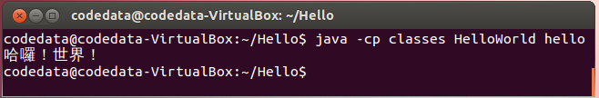
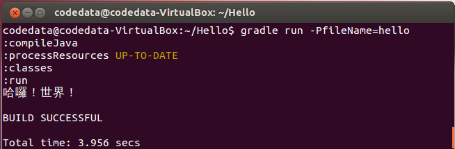

接下來要準備「撰寫、編譯與執行」第一個 Java 程式。Java 的原始碼副檔名必須是 .java，經由編譯器將之編譯為副檔名為 .class 的位元碼（Bytecode）檔案。
練習 3：哈囉！世界！
雖然你可以將 Java 原始碼 .java 檔案與編譯出來的 .class 位元碼檔案，放在同一個目錄底下，不過這邊一開始就要你將原始碼與位元碼檔案分開在兩個目錄底下管理，這會讓你一開始就得認識幾個編譯與執行時的引數，也讓第一個程式有些挑戰性。
你可以執行以下指令來建立、進入專案目錄 Hello、原始碼目錄 src、位元碼目錄 classes，並開始編輯第一個 Java 原始碼：
~$ mkdir Hello
~$ cd Hello
~/Hello$ mkdir src
~/Hello$ mkdir classes
~/Hello$ st2 src/HelloWorld.javaHelloWorld.java 的內容如下，留意一下你的程式碼中大小寫必須與這邊的範例一致：
import java.nio.charset.Charset;
import java.io.IOException;
import java.nio.file.*;
import static java.lang.System.*;
public class HelloWorld {
public static void main(String[] args) {
Path source = Paths.get(args[0]);
Charset charset = Charset.forName("UTF-8");
try {
for(String line : Files.readAllLines(source, charset)) {
out.println(line);
}
} catch(IOException ex) {
err.println(ex.getMessage());
}
}
}編輯完成後存檔，這邊暫不解釋程式碼的細節。附帶一提，練習的程式碼成果，都可以在上一篇中，從 Github 下載的 JavaTutorial 中取得，舉例來說，這個練習的成果，可以在其中的 labs/solutions/exercise3 中取得。接著你得編譯 src/HelloWorld.java 原始碼，並將編譯後的位元碼儲存為 classes/HelloWorld.class：
~/Hello$ javac -d classes src/HelloWorld.java編譯時使用 javac 編譯器，
-d 引數指定了位元碼的存放位置為 classes，如果編譯成功，classes 中就會出現 HelloWorld.class 檔案。
接著，使用 gedit 編輯任何一個檔案，我這邊存為 hello 檔案：
~/Hello$ gedit hello寫寫一些文字（中文英文都可以）之後存檔，我在裏頭寫著「哈囉！世界！」。嗯？我們不是安裝了 Sublime Text 2 嗎？是沒錯，不過要讓前一篇文章中安裝的 Sublime Text 2 可以輸入中文，會是另一個故事了（顯示倒是沒問題），所以，這邊還是先使用一下 gedit。接著你可以執行以下指令，來讀取並顯示 hello 檔案中的文字：
~/Hello$ java -cp classes HelloWorld hello執行
java 指令是啟動一個 JVM，-cp 是 -classpath 的縮寫，CLASSPATH 是類別路徑，這告訴 JVM，可以至哪些目錄中，找到位元碼檔案。上面的指令指定從 HelloWorld 位元碼檔案的 main 開始執行，最後的 hello 是給位元碼檔案的命令列引數（Command line argument），你指定的命令列引數，會依序儲存為 main 中的字串陣列元素。如果指令無誤且執行正確，你應該可以看到以下畫面：
{kind=link}

練習 4：使用 Gradle 的哈囉！世界！
顯然地，Java 程式必須經過撰寫、編譯、執行這幾個步驟有些麻煩，實際上在編譯 .java 原始碼時，如果有多個 .java 檔案及已經編譯完成的 .class 檔案的話，還必須指定
-classpath 及 -sourcepath，你可以使用建構（Build）工具來簡化並自動化這個流程，像是使用前一篇文章下載安裝的 Gradle。
為了符合 Gradle 專案的慣例，先依以下指令來調整原始碼的位置：
~/Hello$ mkdir -p src/main/java
~/Hello$ mv src/HelloWorld.java src/main/java/
~/Hello$ rm -r classesGradle 的慣例期待你的 .java 原始碼會置放在 src/main/java 目錄中，編譯出來的 .class 檔案會放置在 build\classes\main 中，不過你不用自行建立這個目錄，Gradle 稍後會自行為你建立。
你需要在專案目錄下建立一個 build.gradle 檔案，內容如下：
apply plugin: 'java'
apply plugin:'application'
mainClassName = "HelloWorld"
run {
args fileName
}
'java''application' 的 plugin 則擴充了語言常用的相關任務（Task），像是執行應用程式等；mainClassName 指出了從哪個位元碼檔案的 main 開始執行。run 這個任務中，使用 args 指定了執行位元碼檔案時給定的命令列引數。
撰寫並儲存 build.gradle 檔案之後，可以如下執行 Gradle：
~/Hello$ gradle run -PfileName=hello
-PfileName=hellofileName 參數的值為 'hello'，這也就是先前 run 任務中的 fileName 參數。如果執行正確無誤，你將可以看到以下畫面（完成後順便檢視專案底下 Gradle 為你產生的 build 目錄中有哪些東西）：
{kind=link}

從這邊的兩個練習，你也瞭解了 一個 Java 專案的建立、原始碼的撰寫、位元碼的編譯與執行等基本必要的動作（而不是傻瓜式的哈囉！世界！），也知道如何使用建構工具來簡化、自動化這個過程。
第一堂課差不多快下課了，剩下的時間，我們來瞭解一下剛剛的 HelloWorld.java 寫了什麼，這是下一篇文章的內容了。